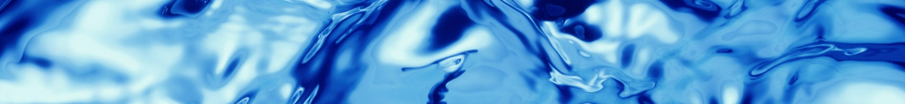

Храми води України та світу
Вода є в нашому житті найвагомішим чинником для виживання. Завдяки своїй важливості, вода для людини завжди є чимось особливим і навіть божественним. Про воду, як і про багато інших природних ресурсів, писали картини, створювали пам'ятники, але найзначущими є храми води в усьому світі, а також храми води України.

Храм води України та найбільші храми світуНа сьогоднішній день у світі існує велика кількість святих храмів води. Їхні різновиди, форми та розміри інколи вражають своєю красою. Найцікавішими та найпопулярнішими храмами води є: Храм Чистої води в Кіото (Японія), Храм води Загван (Туніс), Храм священної води на Балі (Індонезія), а також храм води України – Святителя Миколая на воді в Києві. Храм води в Японії Кіеміцу-дера (оригінальна назва, у перекладі - Храм Чистої води) був створений ще в 780 році. З часом храм «обростав» прибудовами і зараз уже виглядає як цілий комплекс. Будівлю було створено ченцем, за розповідями, уві сні він побачив божество Тисячорукую Каннон, яка сказала йому оселитися на цьому місці. А через якийсь час це місце стало місцем для буддійських молебнів. Храм води Загван - це великий комплекс споруд біля підніжжя найвищої гори в Тунісі, який на сьогоднішній день, на жаль, є лише руїнами. Колись цей храм забезпечував водою місцеве населення за часів ще римської епохи. Вчені стверджують, що, найімовірніше, це був величезний бурхливий фонтан, але більш конкретних тверджень не існує. Але попри все вода в храм усе ще надходить, чим особливо тішить туристів, які туди завітали.
Священні води України – церква Святителя Миколая на воді
Це сучасна інтерпретація храму на воді розташована в центрі столиці України – у Києві на набережній Дніпра. Початкове будівництво цього храму почалося ще тоді, коли будували саму набережну (приблизно в 19280-му році), але через два роки будівництва вона була зруйнована. Головна цінність і краса храму - це ікона Святителя Миколая Чудотворця, якій уже понад два століття. Під час останньої перебудови набережної за храм знову взялися, і тепер ми можемо прийти не просто до дому молитви, а до гарного твору мистецтва, адже за формою храм нагадує квітучий каштан.
Твором мистецтва, окрім Храму води України, є Храм Священної води на Балі
Це місце є не лише уособленням духовної чистоти, а й уособленням духовної краси. Стіни цього храму води виконані з неймовірними малюнками та візерунками. Архітектурні споруди та різьблення по дереву роблять це місце незабутнім. Храм складається з басейну, який наповнюють 15 фонтанів, і протягом багатьох століть щодня туди прибувають сотні віруючих із бажанням омовіння.Сподіваємося, що найближчими роками води України зможуть отримати ще кілька набагато більших за розмірами храмів на воді, адже святиня для людини - це душа.